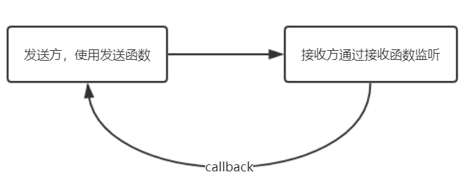

<!DOCTYPE html>
<html>
<head><meta name="generator" content="Hexo 3.8.0">
    <meta charset="utf-8">

    

    
    <title>chrome-extension | o1hy</title>
    
    <meta name="viewport" content="width=device-width, initial-scale=1, maximum-scale=1">
    
        <meta name="keywords" content="chrome">
    
    <meta name="description" content="本文将介绍一些chrome插件的基础内容，但是也省略了一些基础的内容。并不面向新手开发者。文中将会对content-js,inject-js,popup,background做一些粗略的介绍，尤其是对它们之间的通信方面。">
<meta name="keywords" content="chrome">
<meta property="og:type" content="article">
<meta property="og:title" content="chrome-extension">
<meta property="og:url" content="https://17307.github.io/2019/02/02/chrome-extension/index.html">
<meta property="og:site_name" content="o1hy">
<meta property="og:description" content="本文将介绍一些chrome插件的基础内容，但是也省略了一些基础的内容。并不面向新手开发者。文中将会对content-js,inject-js,popup,background做一些粗略的介绍，尤其是对它们之间的通信方面。">
<meta property="og:locale" content="en">
<meta property="og:image" content="https://17307.github.io/2019/02/02/chrome-extension/chrome.png">
<meta property="og:updated_time" content="2019-02-14T11:33:28.165Z">
<meta name="twitter:card" content="summary">
<meta name="twitter:title" content="chrome-extension">
<meta name="twitter:description" content="本文将介绍一些chrome插件的基础内容，但是也省略了一些基础的内容。并不面向新手开发者。文中将会对content-js,inject-js,popup,background做一些粗略的介绍，尤其是对它们之间的通信方面。">
<meta name="twitter:image" content="https://17307.github.io/2019/02/02/chrome-extension/chrome.png">
    

    

    
        <link rel="icon" href="/css/images/github.png">
    

    <link rel="stylesheet" href="/libs/font-awesome/css/font-awesome.min.css">
    <link rel="stylesheet" href="/libs/titillium-web/styles.css">
    <link rel="stylesheet" href="/libs/source-code-pro/styles.css">

    <link rel="stylesheet" href="/css/style.css">

    <script src="/libs/jquery/3.3.1/jquery.min.js"></script>
    
    
        <link rel="stylesheet" href="/libs/lightgallery/css/lightgallery.min.css">
    
    
        <link rel="stylesheet" href="/libs/justified-gallery/justifiedGallery.min.css">
    
    
    


</head>
</html>
<body>
    <div id="wrap">
        <header id="header">
    <div id="header-outer" class="outer">
        <div class="container">
            <div class="container-inner">
                <div id="header-title">
                    <h1 class="logo-wrap">
                        <a href="/" class="logo"></a>
                    </h1>
                    
                </div>
                <div id="header-inner" class="nav-container">
                    <a id="main-nav-toggle" class="nav-icon fa fa-bars"></a>
                    <div class="nav-container-inner">
                        <ul id="main-nav">
                            
                                <li class="main-nav-list-item">
                                    <a class="main-nav-list-link" href="/">Home</a>
                                </li>
                            
                                        <ul class="main-nav-list"><li class="main-nav-list-item"><a class="main-nav-list-link" href="/categories/ML-DL/">ML&DL</a></li><li class="main-nav-list-item"><a class="main-nav-list-link" href="/categories/PT/">PT</a></li><li class="main-nav-list-item"><a class="main-nav-list-link" href="/categories/ctf/">ctf</a></li><li class="main-nav-list-item"><a class="main-nav-list-link" href="/categories/others/">others</a><ul class="main-nav-list-child"><li class="main-nav-list-item"><a class="main-nav-list-link" href="/categories/others/chrome/">chrome</a></li><li class="main-nav-list-item"><a class="main-nav-list-link" href="/categories/others/git/">git</a></li><li class="main-nav-list-item"><a class="main-nav-list-link" href="/categories/others/indego/">indego</a></li><li class="main-nav-list-item"><a class="main-nav-list-link" href="/categories/others/linux/">linux</a></li></ul></li><li class="main-nav-list-item"><a class="main-nav-list-link" href="/categories/papers/">papers</a></li><li class="main-nav-list-item"><a class="main-nav-list-link" href="/categories/python/">python</a></li><li class="main-nav-list-item"><a class="main-nav-list-link" href="/categories/web/">web</a><ul class="main-nav-list-child"><li class="main-nav-list-item"><a class="main-nav-list-link" href="/categories/web/db/">db</a></li><li class="main-nav-list-item"><a class="main-nav-list-link" href="/categories/web/docker/">docker</a></li><li class="main-nav-list-item"><a class="main-nav-list-link" href="/categories/web/flask/">flask</a></li><li class="main-nav-list-item"><a class="main-nav-list-link" href="/categories/web/nginx/">nginx</a></li><li class="main-nav-list-item"><a class="main-nav-list-link" href="/categories/web/php/">php</a></li></ul></li></ul>
                                    
                                <li class="main-nav-list-item">
                                    <a class="main-nav-list-link" href="/about/index.html">About</a>
                                </li>
                            
                        </ul>
                        <nav id="sub-nav">
                            <div id="search-form-wrap">

    <form class="search-form">
        <input type="text" class="ins-search-input search-form-input" placeholder="Search">
        <button type="submit" class="search-form-submit"></button>
    </form>
    <div class="ins-search">
    <div class="ins-search-mask"></div>
    <div class="ins-search-container">
        <div class="ins-input-wrapper">
            <input type="text" class="ins-search-input" placeholder="Type something...">
            <span class="ins-close ins-selectable"><i class="fa fa-times-circle"></i></span>
        </div>
        <div class="ins-section-wrapper">
            <div class="ins-section-container"></div>
        </div>
    </div>
</div>
<script>
(function (window) {
    var INSIGHT_CONFIG = {
        TRANSLATION: {
            POSTS: 'Posts',
            PAGES: 'Pages',
            CATEGORIES: 'Categories',
            TAGS: 'Tags',
            UNTITLED: '(Untitled)',
        },
        ROOT_URL: '/',
        CONTENT_URL: '/content.json',
    };
    window.INSIGHT_CONFIG = INSIGHT_CONFIG;
})(window);
</script>
<script src="/js/insight.js"></script>

</div>
                        </nav>
                    </div>
                </div>
            </div>
        </div>
    </div>
</header>
        <div class="container">
            <div class="main-body container-inner">
                <div class="main-body-inner">
                    <section id="main">
                        <div class="main-body-header">
    <h1 class="header">
    
    <a class="page-title-link" href="/categories/others/">others</a><i class="icon fa fa-angle-right"></i><a class="page-title-link" href="/categories/others/chrome/">chrome</a>
    </h1>
</div>

                        <div class="main-body-content">
                            <article id="post-chrome-extension" class="article article-single article-type-post" itemscope="" itemprop="blogPost">
    <div class="post-toc" id="post-toc">
    <strong class="post-toc-title">TOC</strong>
    <ol class="toc"><li class="toc-item toc-level-1"><a class="toc-link" href="#核心介绍"><span class="toc-text">核心介绍</span></a><ol class="toc-child"><li class="toc-item toc-level-2"><a class="toc-link" href="#manifest-json"><span class="toc-text">manifest.json</span></a></li><li class="toc-item toc-level-2"><a class="toc-link" href="#四个核心内容"><span class="toc-text">四个核心内容</span></a><ol class="toc-child"><li class="toc-item toc-level-3"><a class="toc-link" href="#popup"><span class="toc-text">popup</span></a></li><li class="toc-item toc-level-3"><a class="toc-link" href="#content-js"><span class="toc-text">content-js</span></a></li><li class="toc-item toc-level-3"><a class="toc-link" href="#inject-js"><span class="toc-text">inject-js</span></a></li><li class="toc-item toc-level-3"><a class="toc-link" href="#background"><span class="toc-text">background</span></a></li></ol></li></ol></li><li class="toc-item toc-level-1"><a class="toc-link" href="#通信"><span class="toc-text">通信</span></a><ol class="toc-child"><li class="toc-item toc-level-3"><a class="toc-link" href="#content-js-与-inject-js"><span class="toc-text">content-js 与 inject-js</span></a></li><li class="toc-item toc-level-3"><a class="toc-link" href="#others"><span class="toc-text">others</span></a></li></ol></li></ol>
</div>

    <div class="article-inner">
        
            <header class="article-header">
                
    
        <h1 class="article-title" itemprop="name">
        chrome-extension
        </h1>
    

            </header>
        
        
            <div class="article-meta">
                
    <div class="article-date">
        <a href="/2019/02/02/chrome-extension/" class="article-date">
            <time datetime="2019-02-02T13:50:15.000Z" itemprop="datePublished">2019-02-02</time>
        </a>
    </div>

		

                
    <div class="article-tag">
        <i class="fa fa-tag"></i>
        <a class="tag-link" href="/tags/chrome/">chrome</a>
    </div>

                <span id="busuanzi_container_site_pv">
                    本站总访问量<span id="busuanzi_value_site_pv"></span>次
                </span>
                <span id="busuanzi_container_page_pv">
                    本文总阅读量<span id="busuanzi_value_page_pv"></span>次
                  </span>
            </div>
        
        
        <div class="article-entry" itemprop="articleBody">
            <p>本文将介绍一些chrome插件的基础内容，但是也省略了一些基础的内容。并不面向新手开发者。文中将会对<code>content-js</code>,<code>inject-js</code>,<code>popup</code>,<code>background</code>做一些粗略的介绍，尤其是对它们之间的通信方面。</p>
<a id="more"></a>
<h1 id="核心介绍"><a href="#核心介绍" class="headerlink" title="核心介绍"></a>核心介绍</h1><h2 id="manifest-json"><a href="#manifest-json" class="headerlink" title="manifest.json"></a>manifest.json</h2><p>首先是<code>manifest.json</code>,这是一个Chrome插件最重要也是必不可少的文件，用来配置所有和插件相关的配置，必须放在根目录。</p>
<figure class="highlight"><table><tr><td class="gutter"><pre><span class="line">1</span><br><span class="line">2</span><br><span class="line">3</span><br><span class="line">4</span><br><span class="line">5</span><br><span class="line">6</span><br><span class="line">7</span><br><span class="line">8</span><br><span class="line">9</span><br><span class="line">10</span><br><span class="line">11</span><br><span class="line">12</span><br><span class="line">13</span><br><span class="line">14</span><br><span class="line">15</span><br><span class="line">16</span><br><span class="line">17</span><br><span class="line">18</span><br><span class="line">19</span><br><span class="line">20</span><br><span class="line">21</span><br><span class="line">22</span><br><span class="line">23</span><br><span class="line">24</span><br><span class="line">25</span><br><span class="line">26</span><br><span class="line">27</span><br><span class="line">28</span><br><span class="line">29</span><br><span class="line">30</span><br><span class="line">31</span><br><span class="line">32</span><br><span class="line">33</span><br><span class="line">34</span><br><span class="line">35</span><br><span class="line">36</span><br><span class="line">37</span><br><span class="line">38</span><br><span class="line">39</span><br><span class="line">40</span><br><span class="line">41</span><br><span class="line">42</span><br><span class="line">43</span><br><span class="line">44</span><br><span class="line">45</span><br><span class="line">46</span><br><span class="line">47</span><br><span class="line">48</span><br><span class="line">49</span><br><span class="line">50</span><br><span class="line">51</span><br><span class="line">52</span><br><span class="line">53</span><br><span class="line">54</span><br><span class="line">55</span><br><span class="line">56</span><br><span class="line">57</span><br><span class="line">58</span><br><span class="line">59</span><br><span class="line">60</span><br><span class="line">61</span><br><span class="line">62</span><br><span class="line">63</span><br><span class="line">64</span><br><span class="line">65</span><br><span class="line">66</span><br><span class="line">67</span><br><span class="line">68</span><br><span class="line">69</span><br><span class="line">70</span><br><span class="line">71</span><br></pre></td><td class="code"><pre><span class="line">&#123;</span><br><span class="line">    // 清单文件的版本，这个必须写，而且必须是2</span><br><span class="line">    "manifest_version": 2,</span><br><span class="line">    // 插件的名称</span><br><span class="line">    "name": "demo",</span><br><span class="line">    // 插件的版本</span><br><span class="line">    "version": "1.0.0",</span><br><span class="line">    // 插件描述</span><br><span class="line">    "description": "简单的Chrome扩展demo",</span><br><span class="line">    // 图标，全部用一个尺寸的也没问题</span><br><span class="line">    "icons":</span><br><span class="line">    &#123;</span><br><span class="line">        <span class="attr">"16"</span>: <span class="string">"img/icon.png"</span>,</span><br><span class="line">        <span class="attr">"48"</span>: <span class="string">"img/icon.png"</span>,</span><br><span class="line">        <span class="attr">"128"</span>: <span class="string">"img/icon.png"</span></span><br><span class="line">    &#125;,</span><br><span class="line">    // 会一直常驻的后台JS或后台页面</span><br><span class="line">    "background":</span><br><span class="line">    &#123;</span><br><span class="line">        // 2种指定方式，如果指定JS，那么会自动生成一个背景页</span><br><span class="line">        "page": "background.html"</span><br><span class="line">        //"scripts": ["js/background.js"]</span><br><span class="line">    &#125;,</span><br><span class="line">    // 浏览器右上角图标设置，browser_action、page_action、app必须三选一</span><br><span class="line">    "browser_action": </span><br><span class="line">    &#123;</span><br><span class="line">        <span class="attr">"default_icon"</span>: <span class="string">"img/icon.png"</span>,</span><br><span class="line">        // 图标悬停时的标题，可选</span><br><span class="line">        "default_title": "这是一个示例Chrome插件",</span><br><span class="line">        //点击后，弹出的页面</span><br><span class="line">        "default_popup": "popup.html"</span><br><span class="line">    &#125;,</span><br><span class="line"> </span><br><span class="line">    // content - js</span><br><span class="line">    "content_scripts": </span><br><span class="line">    [</span><br><span class="line">        &#123;</span><br><span class="line">            //"matches": ["http://*/*", "https://*/*"],可以用正则匹配</span><br><span class="line">            // "&lt;all_urls&gt;" 表示匹配所有地址</span><br><span class="line">            "matches": ["&lt;all_urls&gt;"],</span><br><span class="line">            // 多个JS按顺序注入</span><br><span class="line">            "js": ["js/jquery-1.8.3.js", "js/content-script.js"],</span><br><span class="line">            // css</span><br><span class="line">            "css": ["css/custom.css"],</span><br><span class="line">            // 代码注入的时间，可选值：</span><br><span class="line">            //"document_start"页面记载前, </span><br><span class="line">            //"document_end"页面记载后, </span><br><span class="line">            //or "document_idle"，最后一个表示页面空闲时，默认document_idle</span><br><span class="line">            "run_at": "document_start"</span><br><span class="line">        &#125;,</span><br><span class="line">        // 多个 content_javascripts规则</span><br><span class="line">        &#123;</span><br><span class="line">            <span class="attr">"matches"</span>: [<span class="string">"*://*/*.png"</span>],</span><br><span class="line">            <span class="attr">"js"</span>: [<span class="string">"js/show-image-content-size.js"</span>]</span><br><span class="line">        &#125;</span><br><span class="line">    ],</span><br><span class="line">    // inject-js注入的需求配置</span><br><span class="line">    "web_accessible_resources": ["js/inject.js"],</span><br><span class="line">    // 权限申请</span><br><span class="line">    "permissions":</span><br><span class="line">    [</span><br><span class="line">        <span class="string">"contextMenus"</span>, // 右键菜单</span><br><span class="line">        <span class="string">"tabs"</span>, // 标签</span><br><span class="line">        <span class="string">"notifications"</span>, // 通知</span><br><span class="line">        <span class="string">"webRequest"</span>, // web请求</span><br><span class="line">        <span class="string">"webRequestBlocking"</span>,</span><br><span class="line">        <span class="string">"storage"</span>, // 插件本地存储</span><br><span class="line">        <span class="string">"http://*/*"</span>, // 跨域</span><br><span class="line">        <span class="string">"https://*/*"</span> // 跨域</span><br><span class="line">    ],</span><br><span class="line">&#125;</span><br></pre></td></tr></table></figure>
<h2 id="四个核心内容"><a href="#四个核心内容" class="headerlink" title="四个核心内容"></a>四个核心内容</h2><p>本文给出的四个核心内容为：<code>content-js</code>,<code>inject-js</code>,<code>popup</code>,<code>background</code>。下面将会做一些个人的理解介绍。</p>
<h3 id="popup"><a href="#popup" class="headerlink" title="popup"></a>popup</h3><p><code>popup</code>是点击插件后，弹出来的小页面，当点击那个小按钮的时候，<code>popup.html</code>将会调用。同时包含在<code>popup.html</code>中的js文件也会被运行。<strong>popup.html无法直接写js脚本，必须通过包含的方式来写。</strong></p>
<h3 id="content-js"><a href="#content-js" class="headerlink" title="content-js"></a>content-js</h3><p><code>content-js</code>是Chrome插件中向页面注入脚本的一种形式，会根据配置文件中指定的时间加载。</p>
<blockquote>
<p><code>content_scripts</code>中的脚本只是共享页面的DOM，而并不共享页面内嵌JavaScript的命名空间。也就是说，如果当前页面中的JavaScript有一个全局变量<code>a</code>，<code>content_scripts</code>中注入的脚本也可以有一个全局变量<code>a</code>，两者不会相互干扰。当然你也无法通过<code>content_scripts</code>访问到页面本身内嵌JavaScript的变量和函数。(<a href="http://www.ituring.com.cn/book/miniarticle/60212" target="_blank" rel="noopener">http://www.ituring.com.cn/book/miniarticle/60212</a>)</p>
</blockquote>
<h3 id="inject-js"><a href="#inject-js" class="headerlink" title="inject-js"></a>inject-js</h3><p><code>inject-js</code>与原生页面的js没有差别，因为<code>inject-js</code>就是将js代码注入到正在执行的Web页面中。它的实现方式是：先写一个js的文件，然后在<code>content-js</code>通过如下的类似代码，将写好的js文件注入到网页中。</p>
<figure class="highlight"><table><tr><td class="gutter"><pre><span class="line">1</span><br><span class="line">2</span><br><span class="line">3</span><br><span class="line">4</span><br><span class="line">5</span><br><span class="line">6</span><br></pre></td><td class="code"><pre><span class="line"><span class="comment">//某个content-js页面</span></span><br><span class="line"><span class="keyword">var</span> s = <span class="built_in">document</span>.createElement(<span class="string">'script'</span>);</span><br><span class="line"><span class="comment">//提前写好的js脚本</span></span><br><span class="line">s.src = chrome.extension.getURL(<span class="string">'inject.js'</span>);</span><br><span class="line">(<span class="built_in">document</span>.head || <span class="built_in">document</span>.body).appendChild(s);</span><br><span class="line"># 同时你要注入的inject.js需要在manifest中的web_accessible_resources字段里进行声明,看上面的配置文件</span><br></pre></td></tr></table></figure>
<p>关于上面提到的<code>content-js</code>和<code>inject-js</code>的区别和联系，<code>inject-js</code>在<code>content-js</code>中进行注入。<code>inject-js</code>都可以获取web页面中的js的变量内容，而<code>content-js</code>不可以。</p>
<h3 id="background"><a href="#background" class="headerlink" title="background"></a>background</h3><p><code>background</code>是在页面打开后就一直运行的文件，可以理解为插件和页面的枢纽。</p>
<h1 id="通信"><a href="#通信" class="headerlink" title="通信"></a>通信</h1><p>关于这些组件的通信有四种:</p>
<ul>
<li><code>content-js</code>与<code>inject-js</code>的通信</li>
<li><code>background</code>与<code>content-js</code>的通信</li>
<li><code>background</code>与<code>popup.js</code>的通信</li>
<li><code>popup</code>与<code>content-js</code>的通信</li>
</ul>
<p>四种通信方式的整体思想一致。接收方使用<strong>监听函数</strong>，发送发使用<strong>发送函数</strong>。</p>
<h3 id="content-js-与-inject-js"><a href="#content-js-与-inject-js" class="headerlink" title="content-js 与 inject-js"></a>content-js 与 inject-js</h3><p><a href="https://github.com/17307/chrome-extension/tree/master/content2inject" target="_blank" rel="noopener">demo</a></p>
<figure class="highlight javascript"><table><tr><td class="gutter"><pre><span class="line">1</span><br><span class="line">2</span><br><span class="line">3</span><br><span class="line">4</span><br><span class="line">5</span><br><span class="line">6</span><br><span class="line">7</span><br><span class="line">8</span><br><span class="line">9</span><br><span class="line">10</span><br><span class="line">11</span><br><span class="line">12</span><br><span class="line">13</span><br><span class="line">14</span><br><span class="line">15</span><br><span class="line">16</span><br><span class="line">17</span><br><span class="line">18</span><br><span class="line">19</span><br><span class="line">20</span><br><span class="line">21</span><br><span class="line">22</span><br><span class="line">23</span><br><span class="line">24</span><br><span class="line">25</span><br><span class="line">26</span><br><span class="line">27</span><br><span class="line">28</span><br><span class="line">29</span><br><span class="line">30</span><br><span class="line">31</span><br><span class="line">32</span><br><span class="line">33</span><br></pre></td><td class="code"><pre><span class="line"><span class="comment">//inject.js</span></span><br><span class="line">f = <span class="built_in">document</span>.getElementById(<span class="string">'sb_form_go'</span>);</span><br><span class="line">f.onclick = <span class="function"><span class="keyword">function</span>(<span class="params"></span>)</span>&#123;</span><br><span class="line"></span><br><span class="line">    <span class="keyword">var</span> message = <span class="built_in">document</span>.getElementById(<span class="string">'sb_form_q'</span>);</span><br><span class="line">    <span class="built_in">window</span>.postMessage(&#123;<span class="string">'message'</span>:message.value&#125;, <span class="string">'*'</span>);</span><br><span class="line">    <span class="keyword">return</span> <span class="literal">false</span>;</span><br><span class="line">&#125;</span><br><span class="line"></span><br><span class="line"><span class="comment">//main.js</span></span><br><span class="line"></span><br><span class="line"><span class="comment">//注入js</span></span><br><span class="line"><span class="function"><span class="keyword">function</span> <span class="title">injectCustomJs</span>(<span class="params">jsPath</span>)</span></span><br><span class="line"><span class="function"></span>&#123;</span><br><span class="line">    <span class="built_in">console</span>.log(<span class="string">'@@@@@@@@'</span>);</span><br><span class="line">    jsPath = jsPath || <span class="string">'js/inject.js'</span>;</span><br><span class="line">    <span class="keyword">var</span> temp = <span class="built_in">document</span>.createElement(<span class="string">'script'</span>);</span><br><span class="line">    temp.setAttribute(<span class="string">'type'</span>, <span class="string">'text/javascript'</span>);</span><br><span class="line">    <span class="comment">// 获得的地址类似：chrome-extension://ihcokhadfjfchaeagdoclpnjdiokfakg/js/inject.js</span></span><br><span class="line">    temp.src = chrome.extension.getURL(jsPath);</span><br><span class="line">    <span class="comment">// console.log(document)</span></span><br><span class="line">    <span class="built_in">document</span>.body.append(temp);</span><br><span class="line">&#125;</span><br><span class="line"><span class="built_in">console</span>.log(<span class="string">'11111111111111111111'</span>);</span><br><span class="line"></span><br><span class="line"><span class="comment">//接收消息</span></span><br><span class="line"><span class="built_in">window</span>.addEventListener(<span class="string">"message"</span>, <span class="function"><span class="keyword">function</span>(<span class="params">e</span>)</span></span><br><span class="line"><span class="function"></span>&#123;</span><br><span class="line">    <span class="built_in">console</span>.log(e.data);</span><br><span class="line">&#125;, <span class="literal">false</span>);</span><br><span class="line"></span><br><span class="line"></span><br><span class="line">injectCustomJs()</span><br></pre></td></tr></table></figure>
<h3 id="others"><a href="#others" class="headerlink" title="others"></a>others</h3><p>另外的三种通信模式如下：</p>
<p></p>
<p>同时在这三种接收方式中使用的监听函数相同</p>
<figure class="highlight javascript"><table><tr><td class="gutter"><pre><span class="line">1</span><br><span class="line">2</span><br><span class="line">3</span><br><span class="line">4</span><br><span class="line">5</span><br><span class="line">6</span><br><span class="line">7</span><br></pre></td><td class="code"><pre><span class="line">chrome.extension.onMessage.addListener(<span class="function"><span class="keyword">function</span>(<span class="params">message,sender,callback</span>)</span>&#123;</span><br><span class="line">  	<span class="comment">//message为收到的消息</span></span><br><span class="line">    <span class="comment">//sender是发送者的信息</span></span><br><span class="line">    <span class="comment">//callback是回调函数，执行后会调用发送方的回调函数</span></span><br><span class="line">    <span class="built_in">console</span>.log(message)；</span><br><span class="line">    callback(<span class="string">'执行成功'</span>)；</span><br><span class="line">&#125;);</span><br></pre></td></tr></table></figure>
<p>然后就是发送函数，对于发送函数可以分为两种，一种是向插件中的组件发送内容，另一种是向web页面发送内容。向web页面发送内容，实质就是发送到<code>content-js</code>中。这两种发送的函数不同，分别为：<code>chrome.runtime.sendMessag</code>,<code>chrome.tabs.sendMessage</code></p>
<figure class="highlight javascript"><table><tr><td class="gutter"><pre><span class="line">1</span><br><span class="line">2</span><br><span class="line">3</span><br><span class="line">4</span><br><span class="line">5</span><br><span class="line">6</span><br><span class="line">7</span><br><span class="line">8</span><br><span class="line">9</span><br><span class="line">10</span><br><span class="line">11</span><br></pre></td><td class="code"><pre><span class="line">chrome.tabs.query(&#123;<span class="attr">active</span>: <span class="literal">true</span>, <span class="attr">currentWindow</span>: <span class="literal">true</span>&#125;, <span class="function"><span class="keyword">function</span>(<span class="params">tabs</span>)</span></span><br><span class="line"><span class="function">    </span>&#123;</span><br><span class="line">        chrome.tabs.sendMessage(tabs[<span class="number">0</span>].id, message, <span class="function"><span class="keyword">function</span>(<span class="params">response</span>)</span></span><br><span class="line"><span class="function">        </span>&#123;</span><br><span class="line">            <span class="keyword">if</span>(callback) callback(response);</span><br><span class="line">        &#125;);</span><br><span class="line">    &#125;);</span><br><span class="line"></span><br><span class="line">chrome.runtime.sendMessage(&#123;<span class="attr">greeting</span>: <span class="string">'你好，我是content-script呀，我主动发消息给后台！'</span>&#125;, <span class="function"><span class="keyword">function</span>(<span class="params">response</span>) </span>&#123;</span><br><span class="line">    <span class="built_in">console</span>.log(<span class="string">'收到来自后台的回复：'</span> + response);</span><br><span class="line">&#125;);</span><br></pre></td></tr></table></figure>
<p>下面给出一个<a href="https://github.com/17307/chrome-extension/tree/master/demo3" target="_blank" rel="noopener">demo</a></p>
<p></p>

        </div>
        <footer class="article-footer">
            


    <a data-url="https://17307.github.io/2019/02/02/chrome-extension/" data-id="cjsd6d5rd000odgvlm3g8j7yl" class="article-share-link"><i class="fa fa-share"></i>Share</a>
<script>
    (function ($) {
        $('body').on('click', function() {
            $('.article-share-box.on').removeClass('on');
        }).on('click', '.article-share-link', function(e) {
            e.stopPropagation();

            var $this = $(this),
                url = $this.attr('data-url'),
                encodedUrl = encodeURIComponent(url),
                id = 'article-share-box-' + $this.attr('data-id'),
                offset = $this.offset(),
                box;

            if ($('#' + id).length) {
                box = $('#' + id);

                if (box.hasClass('on')){
                    box.removeClass('on');
                    return;
                }
            } else {
                var html = [
                    '<div id="' + id + '" class="article-share-box">',
                        '<input class="article-share-input" value="' + url + '">',
                        '<div class="article-share-links">',
                            '<a href="https://twitter.com/intent/tweet?url=' + encodedUrl + '" class="article-share-twitter" target="_blank" title="Twitter"></a>',
                            '<a href="https://www.facebook.com/sharer.php?u=' + encodedUrl + '" class="article-share-facebook" target="_blank" title="Facebook"></a>',
                            '<a href="http://pinterest.com/pin/create/button/?url=' + encodedUrl + '" class="article-share-pinterest" target="_blank" title="Pinterest"></a>',
                            '<a href="https://plus.google.com/share?url=' + encodedUrl + '" class="article-share-google" target="_blank" title="Google+"></a>',
                        '</div>',
                    '</div>'
                ].join('');

              box = $(html);

              $('body').append(box);
            }

            $('.article-share-box.on').hide();

            box.css({
                top: offset.top + 25,
                left: offset.left
            }).addClass('on');

        }).on('click', '.article-share-box', function (e) {
            e.stopPropagation();
        }).on('click', '.article-share-box-input', function () {
            $(this).select();
        }).on('click', '.article-share-box-link', function (e) {
            e.preventDefault();
            e.stopPropagation();

            window.open(this.href, 'article-share-box-window-' + Date.now(), 'width=500,height=450');
        });
    })(jQuery);
</script>

        </footer>
    </div>
    <script type="application/ld+json">
    {
        "@context": "https://schema.org",
        "@type": "BlogPosting",
        "author": {
            "@type": "Person",
            "name": "o1hy"
        },
        "headline": "chrome-extension",
        "image": "https://17307.github.io/2019/02/02/chrome-extension/chrome.png",
        "keywords": "chrome",
        "genre": "others chrome",
        "datePublished": "2019-02-02",
        "dateCreated": "2019-02-02",
        "dateModified": "2019-02-14",
        "url": "https://17307.github.io/2019/02/02/chrome-extension/",
        "description": "本文将介绍一些chrome插件的基础内容，但是也省略了一些基础的内容。并不面向新手开发者。文中将会对content-js,inject-js,popup,background做一些粗略的介绍，尤其是对它们之间的通信方面。"
        "wordCount": 1134
    }
</script>

</article>

    <section id="comments">
    
        
    <div id="disqus_thread">
        <noscript>Please enable JavaScript to view the <a href="//disqus.com/?ref_noscript">comments powered by Disqus.</a></noscript>
    </div>

    
    </section>


                        </div>
                    </section>
                    <aside id="sidebar">
    <a class="sidebar-toggle" title="Expand Sidebar"><i class="toggle icon"></i></a>
    <div class="sidebar-top">
        <p>follow:</p>
        <ul class="social-links">
            
                
                <li>
                    <a class="social-tooltip" title="github" href="https://github.com/17307" target="_blank" rel="noopener">
                        <i class="icon fa fa-github"></i>
                    </a>
                </li>
                
            
        </ul>
    </div>
    
        
<nav id="article-nav">
    
        <a href="/2019/02/20/Transparency/" id="article-nav-newer" class="article-nav-link-wrap">
        <strong class="article-nav-caption">newer</strong>
        <p class="article-nav-title">
        
            HTTPS and Certificate Transparency
        
        </p>
        <i class="icon fa fa-chevron-right" id="icon-chevron-right"></i>
    </a>
    
    
        <a href="/2018/11/12/infrastructures/" id="article-nav-older" class="article-nav-link-wrap">
        <strong class="article-nav-caption">older</strong>
        <p class="article-nav-title">Graph-theoretic characterization of cyber-threat infrastructures</p>
        <i class="icon fa fa-chevron-left" id="icon-chevron-left"></i>
        </a>
    
</nav>

    
    <div class="widgets-container">
        
            
                
    <div class="widget-wrap widget-list">
        <h3 class="widget-title">links</h3>
        <div class="widget">
            <ul>
                
                    <li>
                        <a href="https://das.scusec.org/">DAS</a>
                    </li>
                
                    <li>
                        <a href="https://www.sec-wiki.com/index.php">secwiki</a>
                    </li>
                
                    <li>
                        <a href="http://prettymask.github.io">prettymask</a>
                    </li>
                
                    <li>
                        <a href="https://herasu.github.io/">Fish</a>
                    </li>
                
            </ul>
        </div>
    </div>


            
                
    <div class="widget-wrap widget-list">
        <h3 class="widget-title">archives</h3>
        <div class="widget">
            <ul class="archive-list"><li class="archive-list-item"><a class="archive-list-link" href="/archives/2019/02/">February 2019</a><span class="archive-list-count">2</span></li><li class="archive-list-item"><a class="archive-list-link" href="/archives/2018/11/">November 2018</a><span class="archive-list-count">1</span></li><li class="archive-list-item"><a class="archive-list-link" href="/archives/2018/10/">October 2018</a><span class="archive-list-count">6</span></li><li class="archive-list-item"><a class="archive-list-link" href="/archives/2018/09/">September 2018</a><span class="archive-list-count">12</span></li><li class="archive-list-item"><a class="archive-list-link" href="/archives/2018/08/">August 2018</a><span class="archive-list-count">11</span></li><li class="archive-list-item"><a class="archive-list-link" href="/archives/2018/06/">June 2018</a><span class="archive-list-count">3</span></li><li class="archive-list-item"><a class="archive-list-link" href="/archives/2017/09/">September 2017</a><span class="archive-list-count">1</span></li></ul>
        </div>
    </div>


            
                
    <div class="widget-wrap widget-list">
        <h3 class="widget-title">tags</h3>
        <div class="widget">
            <ul class="tag-list"><li class="tag-list-item"><a class="tag-list-link" href="/tags/chrome/">chrome</a><span class="tag-list-count">1</span></li><li class="tag-list-item"><a class="tag-list-link" href="/tags/ctf/">ctf</a><span class="tag-list-count">1</span></li><li class="tag-list-item"><a class="tag-list-link" href="/tags/docker/">docker</a><span class="tag-list-count">2</span></li><li class="tag-list-item"><a class="tag-list-link" href="/tags/flask/">flask</a><span class="tag-list-count">3</span></li><li class="tag-list-item"><a class="tag-list-link" href="/tags/linux/">linux</a><span class="tag-list-count">2</span></li><li class="tag-list-item"><a class="tag-list-link" href="/tags/md5碰撞/">md5碰撞</a><span class="tag-list-count">1</span></li><li class="tag-list-item"><a class="tag-list-link" href="/tags/metadata/">metadata</a><span class="tag-list-count">1</span></li><li class="tag-list-item"><a class="tag-list-link" href="/tags/nginx/">nginx</a><span class="tag-list-count">1</span></li><li class="tag-list-item"><a class="tag-list-link" href="/tags/php反序列化/">php反序列化</a><span class="tag-list-count">1</span></li><li class="tag-list-item"><a class="tag-list-link" href="/tags/sql/">sql</a><span class="tag-list-count">1</span></li><li class="tag-list-item"><a class="tag-list-link" href="/tags/sqlmap/">sqlmap</a><span class="tag-list-count">1</span></li><li class="tag-list-item"><a class="tag-list-link" href="/tags/sql注入/">sql注入</a><span class="tag-list-count">3</span></li><li class="tag-list-item"><a class="tag-list-link" href="/tags/文件包含/">文件包含</a><span class="tag-list-count">1</span></li><li class="tag-list-item"><a class="tag-list-link" href="/tags/流量包分析/">流量包分析</a><span class="tag-list-count">1</span></li><li class="tag-list-item"><a class="tag-list-link" href="/tags/爬虫/">爬虫</a><span class="tag-list-count">1</span></li></ul>
        </div>
    </div>


            
        
    </div>
</aside>

                </div>
            </div>
        </div>
        <a id="back-to-top" onclick="goTop()"><i class="icon fa fa-angle-up"></i></a>
        <footer id="footer">
    <div class="container">
        <div class="container-inner">
            <div class="credit">
                <h1 class="logo-wrap">
                    <a href="/" class="logo"></a>
                </h1>
                <p>&copy; 2019 o1hy</p>
                <p>Powered by <a href="//hexo.io/" target="_blank">Hexo</a>. Theme by <a href="//github.com/ppoffice" target="_blank">PPOffice</a></p>
            </div>
            <div class="footer-plugins">
              
    


            </div>
        </div>
    </div>
    <script async src="//busuanzi.ibruce.info/busuanzi/2.3/busuanzi.pure.mini.js"></script>
</footer>

        
    
    <script>
    var disqus_shortname = '17307';
    
    
    var disqus_url = 'https://17307.github.io/2019/02/02/chrome-extension/';
    
    (function() {
    var dsq = document.createElement('script');
    dsq.type = 'text/javascript';
    dsq.async = true;
    dsq.src = '//' + disqus_shortname + '.disqus.com/embed.js';
    (document.getElementsByTagName('head')[0] || document.getElementsByTagName('body')[0]).appendChild(dsq);
    })();
    </script>


    
        <script src="/libs/lightgallery/js/lightgallery.min.js"></script>
        <script src="/libs/lightgallery/js/lg-thumbnail.min.js"></script>
        <script src="/libs/lightgallery/js/lg-pager.min.js"></script>
        <script src="/libs/lightgallery/js/lg-autoplay.min.js"></script>
        <script src="/libs/lightgallery/js/lg-fullscreen.min.js"></script>
        <script src="/libs/lightgallery/js/lg-zoom.min.js"></script>
        <script src="/libs/lightgallery/js/lg-hash.min.js"></script>
        <script src="/libs/lightgallery/js/lg-share.min.js"></script>
        <script src="/libs/lightgallery/js/lg-video.min.js"></script>
    
    
        <script src="/libs/justified-gallery/jquery.justifiedGallery.min.js"></script>
    
    
        <script type="text/x-mathjax-config">
            MathJax.Hub.Config({ tex2jax: { inlineMath: [['$','$'], ['\\(','\\)']] } });
        </script>
        <script src="https://cdnjs.cloudflare.com/ajax/libs/mathjax/2.7.1/MathJax.js?config=TeX-MML-AM_CHTML"></script>
    


<!-- Custom Scripts -->
<script src="/js/main.js"></script>

    </div>
<script src="/live2dw/lib/L2Dwidget.min.js?0c58a1486de42ac6cc1c59c7d98ae887"></script><script>L2Dwidget.init({"model":{"jsonPath":"/live2dw/assets/wanko.model.json"},"display":{"position":"left","width":150,"height":100,"hOffset":0,"vOffset":30},"mobile":{"show":false},"log":false,"pluginJsPath":"lib/","pluginModelPath":"assets/","pluginRootPath":"live2dw/","tagMode":false});</script></body>
</html>
<script>
    function goTop() {
        $('body, html').animate({ scrollTop: 0 }, 600);
    }
</script>
